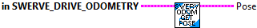
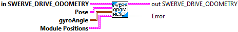

Returns the position of the robot on the field.
Parameters:
- In SwerveDriveOdometry - Input data structure
Returns:
- Pose - The pose of the robot (x and y are in meters).
Constructs a SwerveDriveOdometry object.
Parameters:
- gyroAngle The angle reported by the gyroscope.
- ModulePostions -- Array of module positions (distances)
- initialPose The starting position of the robot on the field.
Returns
- SwerveDriveOdometry - Data Structure

Constructs a SwerveDriveOdometry object with the default pose at the origin.
Parameters:
- gyroAngle - The angle reported by the gyroscope.
- ModulePostions -- Array of module positions (distances)
Returns:
- SwerveDriveOdometry - Data Structure

Resets the robot's position on the field.
The gyroscope angle does not need to be reset here on the user's robot code. The library automatically takes care of offsetting the gyro angle.
Parameters:
- in SwerveDriveOdometry -- input SwerveDriveOdometry data structure
- pose - The position on the field that your robot is at.
- gyroAngle - The angle reported by the gyroscope.
Returns:
- out SwerveDriveOdometry -- Updated data structure

Updates the robot's position on the field using forward kinematics and integration of the pose over time. Thisalso takes in an angle parameter which is used instead of the angular rate that is calculated from forward kinematics.
This subVI is customized for 4 swerve modules.
Parameters:
- InSwerveDriveOdometry - This data structure
- gyroAngle - The angle reported by the gyroscope.
- modulePosition 0 - The current position (distance) of a swerve module. Please provide the states in the same order in which you instantiated your SwerveDriveKinematics.
- modulePosition 1 - The current position (distance) of a swerve module.
- modulePosition 2 - The current position (distance) of a swerve module.
- modulePosition 3 - The current position (distance) of a swerve module.
Returns:
- OutSwerveDriveOdometry - Updated data structure
- The new pose of the robot.
- Error -- TRUE if an error occured (number of modules doesn't match)

Updates the robot's position on the field using forward kinematics and integration of the pose over time. This method takes in the current time as a parameter to calculate period (difference between two timestamps). The period is used to calculate the change in distance from a velocity. Thisalso takes in an angle parameter which is used instead of the angular rate that is calculated from forward kinematics.
Parameters:
- InSwerveDriveKinematics - The data structure
- InSwerveDriveOdometry - This data structure
- gyroAngle - The angle reported by the gyroscope.
- modulePositions - The current positions (distances) of all swerve modules. Please provide the states in the same order in which you instantiated your SwerveDriveKinematics.
Returns:
- OutSwerveDriveOdometry - Updated data structure
- The new pose of the robot.
- Error -- TRUE if an error occured (number of modules doesn't match)